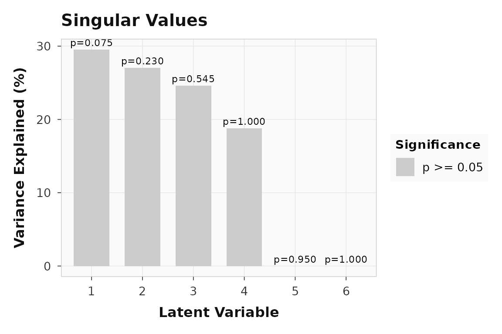
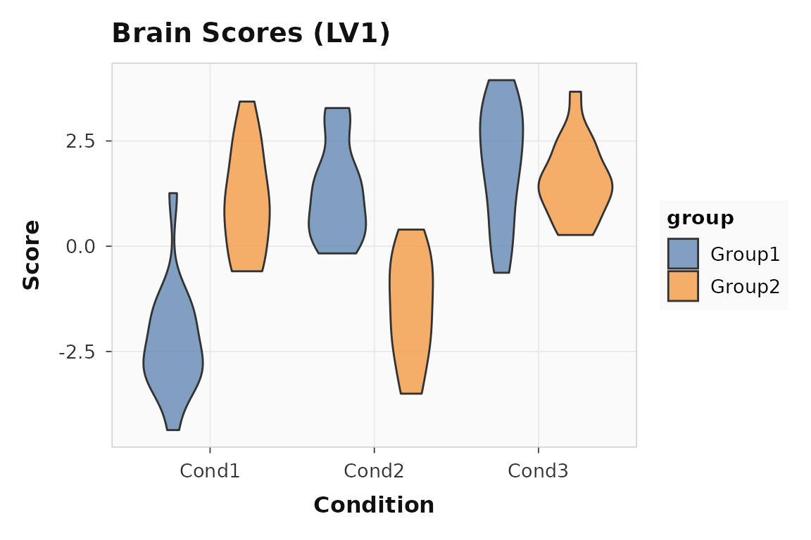
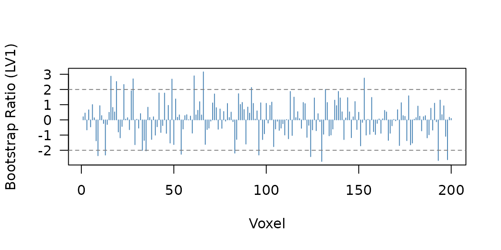
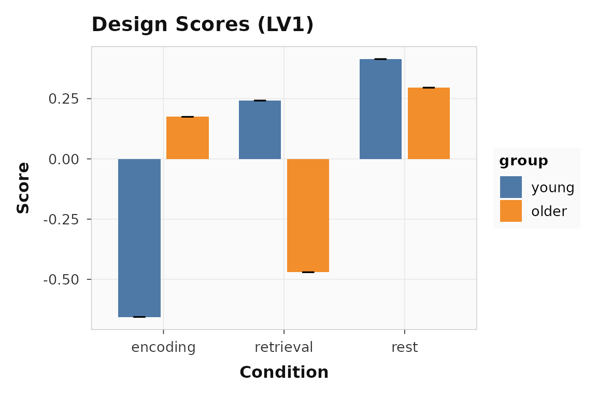

Note:
plsrriis under active development. The API may change before the first stable release.
You have subject-by-condition brain data and want to know two things:
which latent patterns separate your experimental conditions, and how
stable are those patterns under resampling? plsrri gives
you both a direct entry point for standard analyses and a builder
workflow when you need more control.
How does a PLS analysis work?
The core workflow has three steps:
-
Specify — describe your data, conditions, groups,
and analysis parameters in a
pls_specobject -
Run — execute the analysis to get a
pls_resultcontaining singular values, saliences, scores, and optional inference (permutation, bootstrap) -
Extract — pull out what you need with accessor
functions:
significance(),salience(),bsr(),scores(),loadings(),confidence()
| Object | What it holds | How you get it |
|---|---|---|
pls_spec |
Data matrices, method, resampling config |
pls_spec() + builder verbs |
pls_result |
SVD decomposition, scores, inference |
run() or quick_pls()
|
The fastest path is quick_pls(), which wraps all three
steps into one call. The builder API
(pls_spec() |> add_subjects() |> configure() |> run())
gives you labels, metadata, and full control over every parameter.
What does a minimal analysis look like?
This vignette uses a small synthetic dataset: two groups (young, older), three conditions, and 200 voxels with planted signal in two blocks.
Each group matrix has 15 subjects 3 conditions = 45 rows and 200 voxels:
rbind(
young = dim(group_young),
older = dim(group_older)
)
#> [,1] [,2]
#> young 45 200
#> older 45 200quick_pls() is the shortest path. It runs mean-centering
Task PLS with permutation and bootstrap inference in one call:
result <- quick_pls(
datamat_lst = list(group_young, group_older),
num_subj_lst = c(n_subj, n_subj),
num_cond = n_cond,
nperm = 200,
nboot = 200,
progress = FALSE
)The result object carries everything: 6 latent variables, each with a p-value from the permutation test and voxel-level bootstrap ratios.
Which latent variable matters?
Start with significance() to see which latent variables
survive the permutation test, and singular_values() to see
how variance is distributed:
cbind(
pvalue = round(significance(result), 3),
variance = round(singular_values(result, normalize = TRUE), 1)
)
#> pvalue variance
#> LV1 0.075 29.5
#> LV2 0.230 27.0
#> LV3 0.545 24.6
#> LV4 1.000 18.8
#> LV5 0.950 0.0
#> LV6 1.000 0.0LV1 captures 29.5% of the variance. The scree plot makes this dominance visual:
plot_singular_values(result)
Variance explained by each latent variable. LV1 dominates, consistent with the planted signal.
How do conditions load onto LV1?
Design scores show how each group-by-condition cell projects onto the latent variable. Large positive and negative bars indicate conditions that drive the pattern in opposite directions.
plot_scores(result, lv = 1, type = "design", plot_type = "bar")Design scores for LV1. Encoding (condition 1) loads positively; retrieval (condition 2) loads in the opposite direction.
The separation between conditions confirms that LV1 captures a genuine experimental effect, not noise.
How consistent are subjects?
Brain scores show whether individual subjects express the same latent pattern. Tight distributions mean the effect is reliable; wide spread suggests individual differences.
plot_scores(result, lv = 1, type = "brain", plot_type = "violin")
Brain scores for LV1. Each point is one subject-condition observation.
Which voxels contribute reliably?
Bootstrap ratios (BSRs) are saliences divided by their bootstrap standard errors — they work like z-scores. Voxels with or are typically considered reliable.
21 of 200 voxels have . A quick profile shows where the reliable voxels cluster:

Bootstrap ratio profile across voxels. The horizontal lines mark the |BSR| = 2 threshold. Voxels 1-80 and 81-140 show the planted signal blocks.
You can also threshold directly to get a cleaned vector:
When should you use the builder workflow?
Use the builder API when you want condition labels, group names, or non-default method settings to travel with the analysis. The pipe chain makes the full specification explicit and readable:
builder_result <- pls_spec() |>
add_subjects(
list(group_young, group_older),
groups = c(n_subj, n_subj)
) |>
add_conditions(n_cond, labels = c("encoding", "retrieval", "rest")) |>
add_group_labels(c("young", "older")) |>
configure(method = "task", nperm = 200, nboot = 200) |>
run(progress = FALSE)The numerical result is identical to quick_pls(), but
now plots carry meaningful labels:
plot_scores(builder_result, lv = 1, type = "design", plot_type = "bar")
Design scores with condition and group labels from the builder workflow.
The builder API also supports behavior data
(add_behavior()), design contrasts
(add_design()), and non-rotated methods — see
vignette("behavior-pls") for the behavior workflow.
What about the interactive GUI?
For exploratory work, plsrri ships a Shiny application
that wraps the full setup-analyze-explore workflow in a point-and-click
interface:
The GUI supports loading data from BIDS directories, attaching to CLI pipeline outputs, and interactive brain visualization with volume and surface views.
Where to go next
If you want to move from interactive examples to reproducible
scripted analysis, go next to
vignette("scripted-workflows"), which shows the public
non-GUI contract built around saved first-level artifacts, staged CLI
runs, and Quarto reporting.
| Goal | Resource |
|---|---|
| Scripted R API, CLI, and report workflow | vignette("scripted-workflows") |
| Behavior PLS with continuous measures | vignette("behavior-pls") |
| Within-subject seed connectivity from trial-level data | vignette("ws-seed-pls") |
| Multiblock and seed connectivity PLS | vignette("multiblock-and-seed") |
| Full engine parameters | ?pls_analysis |
| Builder verbs |
?pls_spec, ?configure,
?run
|
| Plotting functions |
?plot_scores, ?plot_loadings,
?plot_singular_values
|
| Bootstrap and permutation details |
?bsr, ?significance,
?confidence
|